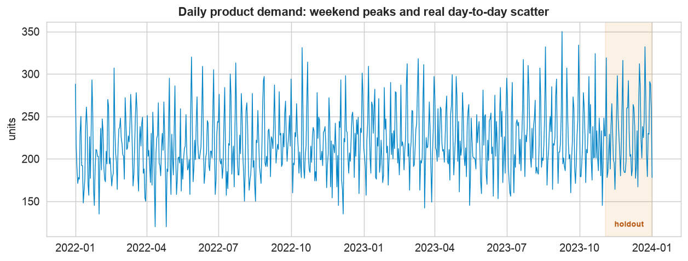
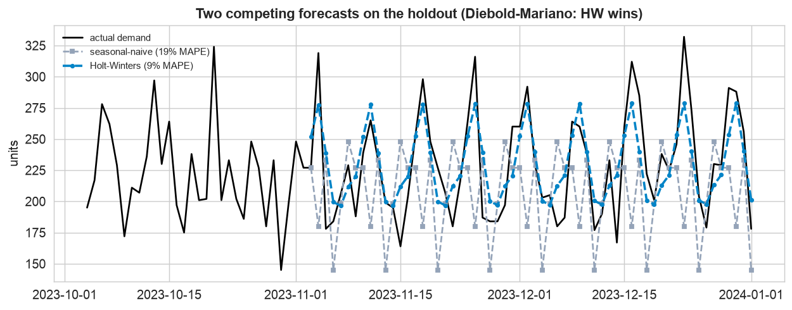
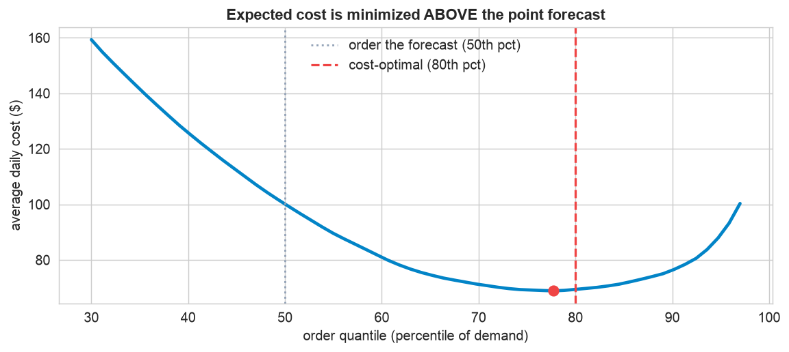
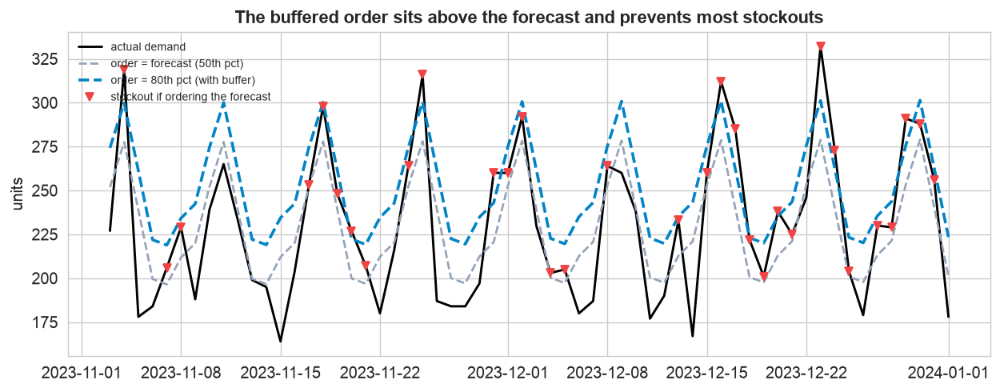
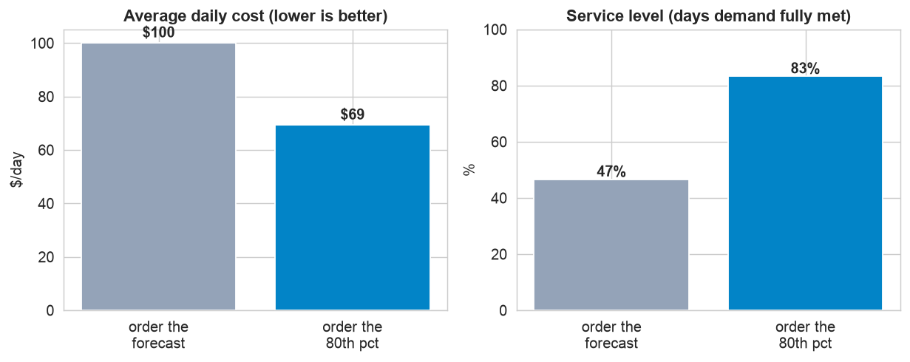

Every case study so far ended with a forecast. But a forecast is not a decision, and this chapter is about the last, decisive step: turning the number into an action. The twist is that the cost-minimizing order is not the forecast. Because being short and being over cost different amounts, the right order is a deliberate quantile of demand, set by the cost of each mistake.
First pick the more accurate forecast, and prove it is better with a Diebold-Mariano test. Then stop ordering the forecast: when a stockout costs 4× a leftover, order to the 80th percentile, a buffer above the forecast, which here is 31% cheaper and stocks the shelf far more often.
The 12-Step Method: Forecast to Decision
The same discipline, carried one step past the forecast into the order. The companion notebook runs all twelve steps; the sections below tell the story and show the plots.
Daily demand for a perishable retail product, 731 days (2 years, 2022 to
2023), in units. It has weekend peaks, a slow trend, and real day-to-day scatter (about 12%). Two columns:
date and demand. The last 60 days are the holdout for both the forecast and the decision.
Define, Forecast & Compare (Steps 1–6)
Define the decision and its costs
A store orders a perishable product once a day. Run short and it loses the margin on each missed sale, the underage cost, about $8 per unit. Order too many and leftovers are wasted, the overage cost, about $2 per unit. The errors are asymmetric: a stockout hurts four times as much as a leftover. Success is minimum cost, not minimum forecast error.
Collect and inspect

The scatter is the point. Demand peaks on weekends and drifts up slowly, but the star of this chapter is the day-to-day variability: even a perfect forecast of the average leaves real uncertainty, and that is exactly what the order decision must hedge against.
Forecast, compare, and test the difference

Pick the better forecast, and prove it. Holt-Winters (about 9% MAPE) clearly beats seasonal-naive (about 19%), and a Diebold-Mariano test confirms the gap is statistically significant (p < 0.001), not luck. So Holt-Winters feeds the decision. But being accurate is only half the job.
Turn the Forecast into an Order (Steps 7–10)
Quantify uncertainty, then apply the newsvendor
The point forecast is the middle of a distribution of possible demand (an error spread of about 27
units), not a certainty. The newsvendor model says the cost-minimizing order is the
critical fractile quantile, Cu / (Cu + Co) = 0.80. Order to the
80th percentile, deliberately above the average, because running short is four times as expensive as
overstocking.
The cost of ordering the average

The minimum is not at the forecast. Sweeping the order across quantiles traces a clear cost curve whose bottom sits near the 80th percentile (red), exactly where the newsvendor formula predicted, not at the 50th (grey) where the point forecast lives. Ordering the average is a common, expensive mistake, and the curve shows precisely how much it costs.
Backtest the decision

The buffer prevents the stockouts. Ordering the point forecast leaves the shelf empty on the red days (service level about 47%); the 80th-percentile order sits above it and catches almost all of them, lifting service to about 83% and cutting cost from about $100 to $69 a day, roughly 31% cheaper.

Same forecast, better decision. Side by side: the 80th-percentile order is both cheaper (about $69 vs $100 a day) and delivers far higher service (83% vs 47% of days fully stocked). The improvement comes entirely from choosing the order well, not from a better forecast.
Deploy & Communicate (Steps 11–12)
A one-line order rule on new data
Deployment is a single rule: refit the forecast on all data, read tomorrow's point forecast and the error spread, and return the critical-fractile order. For the next day the forecast is about 198 units, so the recommended order is about 220 units, a 22-unit safety buffer. It reruns every evening, and if margins or waste costs change, the buffer updates itself automatically.
Communicate
The last step turns the rule into guidance a manager can act on, the plain-English write-up below.
Communicate: the Plain-English Write-Up (Step 12)
For the store manager
What is this? A daily recommendation for how many units to order, built to minimize total cost, not to match a forecast. It weighs the cost of selling out against the cost of throwing stock away.
What goes in, and what comes out
Input: the demand history and the two costs (a stockout costs about $8 a unit, a leftover about $2). Output: a recommended order quantity for tomorrow, refreshed each evening.
The decisions we made, and why
- ✓We picked the better forecast and proved it. Two methods were compared; the more accurate one (about 9% error) won a formal test, so we trust it.
- ✓We did not order the forecast number. Because a stockout costs about four times a leftover, ordering the plain forecast would leave the shelf empty more than half the days.
- ✓We ordered a safety buffer instead, to the 80th percentile of demand, the amount the cost math says is cheapest given the 4-to-1 cost ratio.
What it is worth, in plain terms
Ordering the buffer keeps the shelf stocked about 83% of days instead of under half, and cuts total cost by about 31%, from roughly $100 to $69 a day, from the very same forecast.
The bottom line
Do not order the forecast, order about 22 units above it (the 80th percentile). That keeps customers happy and waste low at the lowest cost. If the margin or the waste cost changes, the recommended buffer changes with it, automatically.
Run the whole project in Python
The companion notebook is the full 12-step workflow: it inspects the demand, fits two forecasts, compares them with the accuracy panel and a Diebold-Mariano test, quantifies the forecast uncertainty, applies the newsvendor critical fractile, sweeps the cost-versus-order curve, backtests the order on cost and service level, and wraps a one-line deployable order rule, every step explained.
View opens the rendered notebook instantly.
Open in Colab runs it live. To run locally, install numpy, pandas,
matplotlib, scipy, statsmodels, and openpyxl.
🎓 Key Takeaways
- ✓The forecast is not the decision: the cost-optimal order is a quantile of demand, not the point forecast.
- ✓Prove the forecast is better: Holt-Winters beat seasonal-naive (9% vs 19% MAPE), confirmed by a Diebold-Mariano test.
- ✓Newsvendor critical fractile: order to the Cu / (Cu + Co) quantile, here 0.80, a buffer above the forecast.
- ✓Better decision, same forecast: the buffered order was ~31% cheaper and lifted service from 47% to 83%.
- ✓The buffer is a dial on the cost ratio: when waste costs more than stockouts, the fractile flips below the forecast.
Take It Further
Five ways to probe the decision in the notebook:
When the fractile flips
Make waste more expensive than stockouts; does the optimal order fall below the forecast?
The order tracks the cost ratio
Sweep the cost ratio and plot how the safety buffer grows.
Empirical predictive distribution
Use the empirical error quantiles instead of a normal; when does it matter?
np.quantile(residuals, fractile).Service level vs cost
Plot both against the order fractile; pick a target service level and read off the order.
Accuracy buys a better decision
Feed the worse forecast through the same rule; how much more does the decision cost?
All five, worked in a companion notebook
A second notebook, Take It Further, rebuilds the Chapter 134 decision and works every extension with explanations, the flipped fractile, the cost-ratio dial, an empirical predictive distribution, the service-versus-cost tradeoff, and the proof that a more accurate forecast yields a cheaper decision.
Quiz: Test Yourself
Eight questions on comparing forecasts and turning them into decisions. Answer them, hit Check Answers, and keep refining until you score 100%. Your progress is saved.
We built a good order rule; now put it into production. Chapter 135 · Case Study: Operationalizing a Forecast serves a forecast as a web service, embeds it in an application, schedules refreshes, and monitors forecast drift, the forecasting analogue of MLOps.